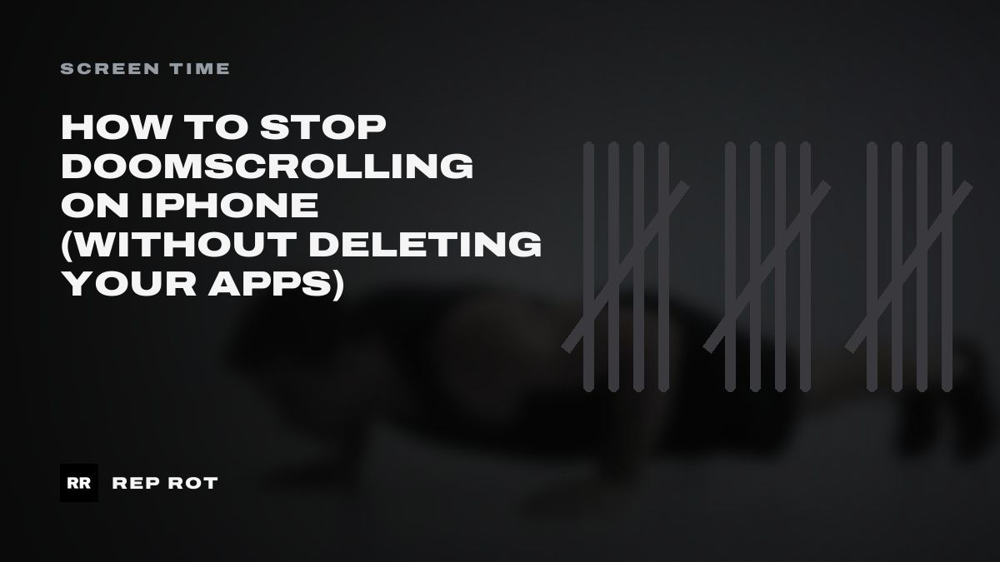
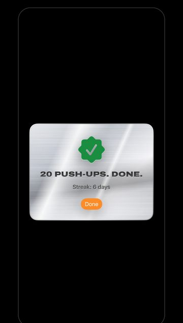

How to Stop Doomscrolling on iPhone (Without Deleting Your Apps)
A practical setup to stop doomscrolling on iPhone: the Screen Time settings that matter in iOS 27, the friction that actually works, and what to do instead.

It's 11:40 p.m. You opened Instagram to check one message.
Now it's 12:25, you've watched a man restore a rusted knife, a dog that hates baths, and four people explaining the economy. You don't remember choosing any of it.
You've tried deleting the app. You reinstalled it on Thursday.
Here's the thing: deleting apps fails because it's all or nothing, and your life runs through your phone. What works is making the scroll harder to start and easier to stop, while leaving the useful parts of the app alone. Below is the exact setup, in the order that makes the biggest difference.
Why you can't just stop doomscrolling
Doomscrolling isn't a character flaw. A feed has no natural stopping point: no last page, no end of the episode, no moment where it asks if you're still there. Every swipe might be the good one, so you keep swiping.
That means "I'll just be more disciplined" is a plan to win a fight every night, at the time of day you're most tired. You'll lose some of those fights. Everyone does.
The fix is to stop relying on the fight. Change the setup so the default outcome is the one you want. Three levers do almost all the work:
- A hard stop: a limit that ends the session for you.
- Friction: a few extra seconds between you and the feed.
- A replacement: something your hands and brain do instead.
Step 1: See your real numbers first
Before you set limits, find out where the time actually goes. Most people guess wrong, usually low.
Go to Settings → Screen Time → Daily Average, then tap Week. Look at three things:
- Your top three apps. These are the only ones worth limiting at first.
- Pickups. How many times a day you pick up the phone. A high number with short sessions means habit checking; a low number with long sessions means you get pulled into the feed.
- When it happens. Late night, first thing in the morning, and right after work are the usual holes.
If Screen Time isn't on yet, Apple's guide turns it on from Settings → Screen Time by turning on App & Website Activity.
Step 2: Set Time Allowances on the apps that eat your day
In iOS 27, Apple reorganized Screen Time around Time Allowances (how long you can use a category of apps each day) and Screen Time Schedules (when during the day they're available). On iOS 26 and earlier, the same ideas are called App Limits and Downtime.
To set an allowance on iOS 27:
- Open Settings → Screen Time → Time Allowances.
- Tap a category such as Social Media or Entertainment, then drag the slider to your daily amount.
- Tap Manage Categories to add a category you don't see yet, or tap a category and then an app to see how much you use each one.
How much time? Take your current daily average for that app and cut it roughly in half. Going from three hours to 20 minutes overnight feels like punishment, and punishments get switched off by Friday.
Add a schedule for your worst hour
Go to Settings → Screen Time → Screen Time Schedule, turn on Schedule, tap Add Schedule, and create a time window for your worst stretch, usually 10:30 p.m. to 7 a.m. Leave social and entertainment out of that window. Under Always Allowed, keep Phone, Messages and anything you need for emergencies.
Lock it, or it's just a suggestion
A limit you can change in two taps is a limit you'll change at midnight. Go to Settings → Screen Time → Passcode & Management → Lock Screen Time Settings and set a four-digit passcode. Make it something you won't type on autopilot. If you want it strict, have a partner or roommate type it in and don't watch.
Be honest with yourself about the limits of this. Screen Time is built around reminders and settings you control. Someone determined to keep scrolling can usually find a way around it. That's why the next step matters.
Step 3: Add friction before the feed
The scroll usually starts on autopilot: thumb opens the app before you've decided anything. A few seconds of friction gives your brain a chance to catch up. Pick two or three of these:
| Change | Where | Why it helps |
|---|---|---|
| Move social apps off the Home Screen | Touch and hold the icon → Remove App → Remove from Home Screen | You have to search for it, which is a conscious act. |
| Turn off notifications for feeds | Settings → Notifications → the app | Most pickups start with a notification. Keep DMs if you need them; drop "suggested for you". |
| Grayscale at night | Settings → Accessibility → Display & Text Size → Color Filters → Grayscale | A gray feed is a lot less interesting. Add it to the Accessibility Shortcut so it's one triple-click away. |
| Charge the phone outside the bedroom | A charger in the kitchen, a $10 alarm clock by the bed | The most effective one on this list, and it doesn't involve any settings. |
None of these stop you from using the app. They just make the mindless version slower, and slow is often enough.
Step 4: Replace the scroll with something physical
Here's what most advice skips. When you block a habit, the urge doesn't disappear. It goes looking for somewhere to land. If nothing is there, it lands back on the phone, usually in another app.
The best replacement is short, physical and needs no decision. Ten squats. A 20-second plank. A set of push-ups against the kitchen counter. It's long enough to break the trance, short enough that you'll actually do it, and you come out of it more awake instead of more drained.
It also adds up. One or two minutes of real effort a few times a day is not nothing; we wrote about the research on exercise snacks, and the short version is that brief, hard bursts of movement spread across the day count for more than most people think.
Make the rule simple: when you hit a limit, you do one set before anything else. Not a workout. One set.
Step 5: Plan for the slip
You'll blow through a limit at some point. When it happens, don't delete everything and start over Monday. Look at what happened:
- Was the limit too tight? Loosen it by 10 minutes and keep the lock.
- Was it a specific time? Add that hour to your schedule.
- Was the phone in reach? Move the charger.
A setup that survives a bad week beats a perfect one that gets abandoned after a bad night.
TL;DR
- Deleting apps fails because it's all or nothing. Add friction and limits instead.
- Check Screen Time → Daily Average → Week first and only limit your top three apps.
- On iOS 27, use Time Allowances plus a Screen Time Schedule for your worst hour (App Limits and Downtime on iOS 26).
- Lock the settings with a Screen Time passcode, ideally one someone else types.
- Off the Home Screen, notifications off, grayscale at night, charger out of the bedroom.
- When you hit a limit, do one short set of exercise before anything else.
Make the limit cost a set
That last rule is the whole idea behind Rep Rot. You pick the apps you lose hours to and set a daily limit. When you hit it, the app locks, and the only way back in is a set of squats, push-ups, sit-ups, pull-ups or a plank. Your iPhone's front camera counts the reps on the phone; nothing is recorded or uploaded.

It doesn't make scrolling impossible. It makes every extra session cost you ten squats, which turns out to be enough to make you ask whether you really want it. Most nights, you won't.
Sources: Apple, Set up Screen Time for yourself on iPhone; Apple, Set Screen Time Schedules and Time Allowances on iPhone; Apple, Create, change, or remove a Screen Time passcode on iPhone.